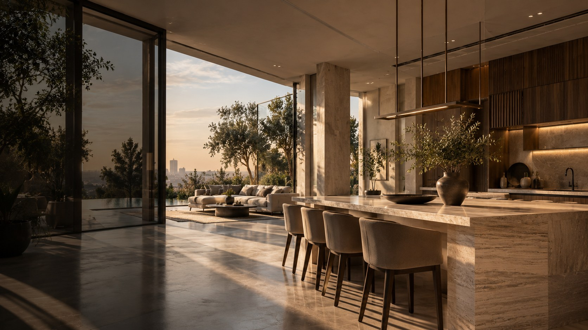

01 / 04
Residential · Interior Architecture
FORMA Living
A considered digital presence for a luxury interiors studio — pacing, material and light treated with the same patience as the work itself.
02 / 04
Healthcare · Patient Experience
VERA Clinic
Turning first-visit anxiety into informed calm — a clinical onboarding experience built around clarity, not paperwork.
ATHAR Lab concept work, self-directed — not commissioned by VERA Clinic.
03 / 04
Education · Career Accelerator
ASCEND Academy
Explore four learning tracks through an interactive curriculum experience.
04 / 04
Strategy · Executive Advisory
MERIDIAN Partners
Explore an eight-stage interactive journey from business diagnosis to strategic direction.